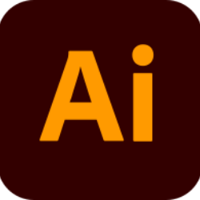
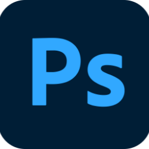
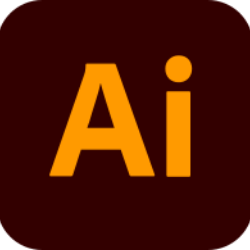
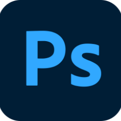

2022年虎躍新程
虎躍新程 虎哩賺大錢！
是為了提供更先進的使用體驗。新設計注入濃厚的過年氛圍，同時引入全新課程和即時資訊，鼓勵更長時間的互動。期待共同邁向這虎躍的新時代，開拓更多商機！
-
使用工具
 



-
開發
-
參與部分
UI/UX Design視覺版面設計Flow Chart網頁切版/開發
研究與討論
-
起初
我們最近決定對內容進行全面優化，旨在提供更豐富、更有價值的閱讀體驗。這次的優化主要出於以下原因。首先，我們希望通過改進內容的結構和排版，讓閱讀變得更輕鬆、更流暢。新的格式將提供更佳的視覺呈現，使讀者更輕鬆地掌握重要資訊。
我們致力於提供高品質且有深度的內容。這次優化將強化內容的質量，確保每一篇文章都能為讀者提供有價值的資訊和洞察。最後，網路環境和使用者期望不斷變化，這次優化是為了跟上這些變化趨勢，確保內容仍然符合讀者的期望。
-
期望
這次的優化不僅僅是為了改變，更是為了實現以下期望。首先，我們期望新的內容能夠更好地引發讀者的興趣，促使更多的互動，包括分享、評論，使我們能夠更深入地了解讀者的需求。其次，透過更具深度和廣度的內容，我們希望為讀者提供更多價值，幫助他們更全面地了解相關主題，並在生活和工作中應用所得。最後，我們重視讀者的意見。這次優化後，期望能夠收到更多的反饋，以便不斷改進，確保內容持續滿足讀者的期望和需求。這是不斷努力提供更優質內容的一部分，謝謝支持和理解。期待在優化後的內容中為您呈現更好的閱讀體驗！
設計發想
-
發想
我們致力於提供更豐富的閱讀體驗。透過放大圖像，打造了溫馨的過年氛圍，使用暖色調和象徵性的過年元素如紅包和春聯，使整體風格更溫暖、熱鬧。 字體方面，我們巧妙運用漸層效果，賦予排版更多立體感。新功能以簡潔而有趣的list形式呈現，讓讀者輕鬆了解最新特色。
我們追求打造專業又親切的閱讀環境，希望在閱讀中，讓您感受到更加豐富的情感和內容價值。
-
設計定義與方向
我們的設計融合了多種元素，包括漸層效果、字體放大、過年氛圍和視差感，以提升閱讀體驗。漸層營造視覺層次，字體放大強化重點，過年元素增添節慶氛圍，而微妙的視差感則為整體動態效果添色。這些設計選擇共同打造一個吸引人的閱讀環境。
-
設計與原型
展示創意的構思和互動性。在這個階段，我希望您能夠仔細審視這些圖片，並將您的想法和反饋分享給我。我相信這個設計將提升用戶體驗並滿足您的期望。
看更多畫面